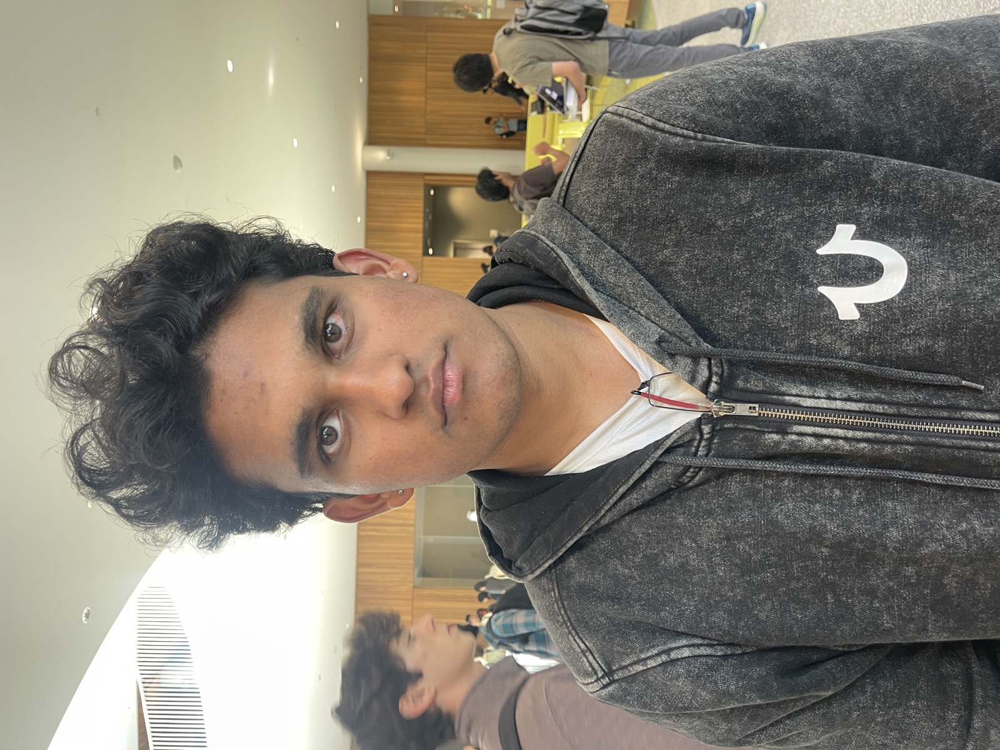
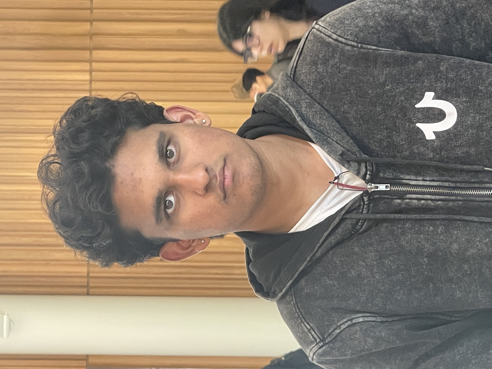
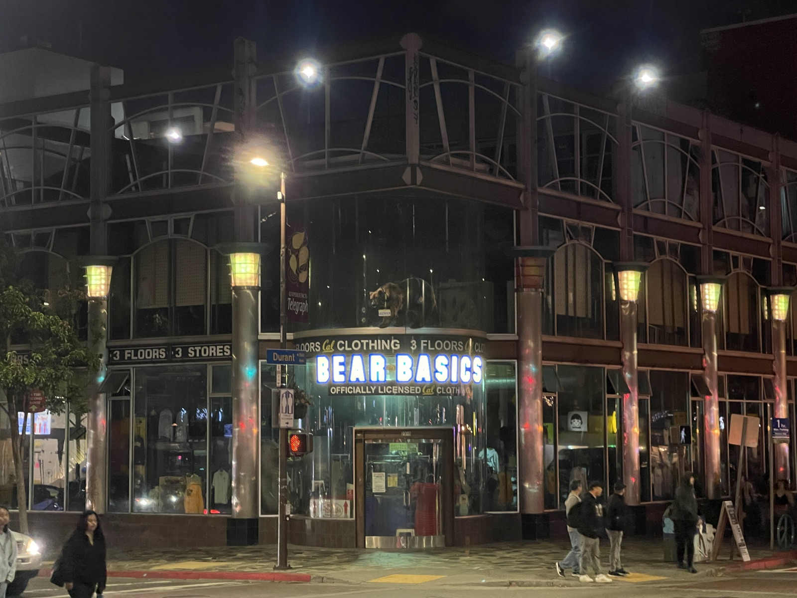
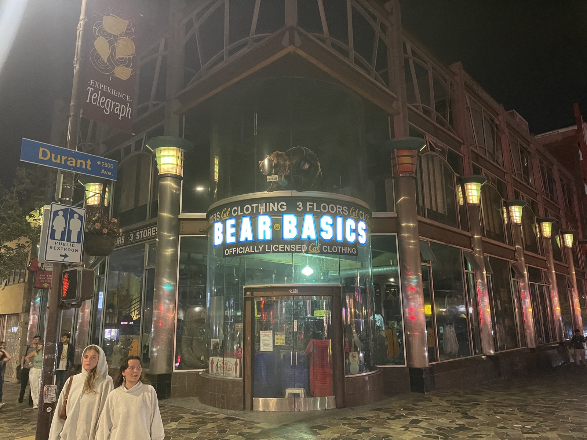
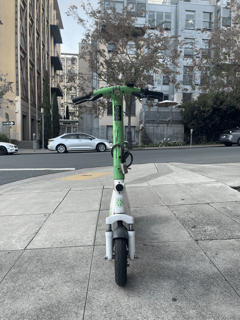

Part 1: Selfie — The Wrong Way vs. The Right Way


In the close-up photo, the nose is larger relative to the rest of the face, and the ears and jawline look compressed. In the photo taken from farther away and zoomed in to match the framing, the face looks proportional.
This is because magnification depends on distance from the camera. Up close, the nose is much closer to the camera than the ears, so it gets magnified more. Farther away, that same difference in distance is less prevalent, so the nose and ears are magnified almost equally.
Part 2: Architectural Perspective Compression


In the far photo, the building's corner and sign look proportional to the rest of the storefront. In the close photo, the corner is larger and fills most of the frame, and the vertical lines of the building lean inwards sharply toward the top.
Up close, the corner is much closer to the camera than the rest of the building, so it gets magnified much more. Farther away, that difference in distance is smaller and thus less impactful, so the corner is magnified by about the same amount as everything else.
Part 3: The Dolly Zoom

Moving the camera back and zooming in keeps the subject the same size, but the background is much farther away, so it barely shrinks from moving back while the zoom still magnifies it fully. This causes the subject to stay fixed while the background appears to expand and shift around it.